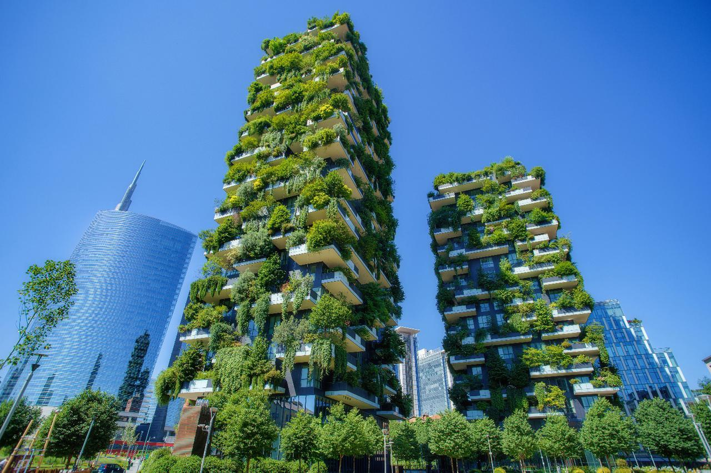
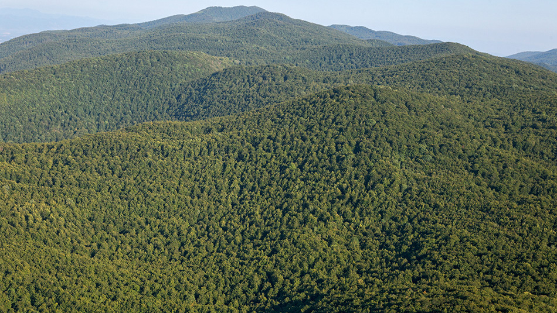

Priroda
Priroda je, u najširem smislu, ekvivalent za prirodni, fizički ili materijalni svijet ili svemir. Priroda označava fenomene fizičkog svijeta, ali i život uopće. Njezin raspon seže od subatomskog do kozmičkog. Latinska riječ za prirodu ili narav jest natura, tj. "esencijalne kvalitete, urođena dispozicija", a u drevna je vremena doslovce značila "rođenje". Natura je bila latinski prijevod grčke riječi physis (φύσις), koja se izvorno povezivala s intrinzičnim karakteristikama koje biljke, životinje i ostale osobine svijeta razvijaju u skladu sa sobom. Koncept prirode u cjelini, fizički svemir, jedan je od nekoliko proširenja izvorne ideje; predsokratski filozofi počeli su primjenjivati riječ φύσις u određenom jezgrovitom značenju i otada je ona počela stjecati svoje značenje. Ova je uporaba bila potvrđena dolaskom moderne znanstvene metode tijekom posljednjih nekoliko stoljeća.

Cvijeće
Cvijet (lat. flos), preobraženi je dio izdanka, koji nosi rasplodne organe biljaka i ima organe za primamljivanje kukaca, radi oprašivanja. Sastavni dijelovi cvijeta:- Cvjetište - (lat. receptaculum), nosi na sebi ostale dijelove cvijeta, može biti čunjasto prošireno, pločasto prošireno ili vrčasto udubljeno
- Ocvijeće - (lat. perianthium), sastoji se od čaške s lapovima i vjenčića s laticama Prašnici - (lat. andreceum), preobraženi su mikrosporofili, sastoje se od prašničke niti (filamenta), koji na svom vrhu nosi dvije antere ili polenovnice, antere su na filament pričvršćene pomoću veze ili konektiva
- Tučak - (lat. gyneceum), može biti samo jedan ili ih ima više, sastavni dijelovi su: plodnica, vrat i njuška tučka
- Prašnici i tučak tulipana
- Lapovi
- Latice
Planine
Planine nastaju i oblikuju se tektonskim procesima koje dijelimo na endogene ili unutrašnje (sizmička i vulkanska aktivnost) i egzogene ili vanjske (erozija, denudacija, korazija). Sedam glavnih dijelova, ili ploča, koji tvore Zemljinu koru, guraju se preko Zemljine kugle brzinom rasta nokta, ali silom koju ljudski um ne može pojmiti. Svaka od njih predstavlja kontinent ili ocean. Budući da Zemljine ploče neprekidno plove planetom stalno udaraju jedna o drugu. Upravo u tim sudarima nastaju veliki planinski lanci.

Zgrade
Zgrada je građevina koja se sastoji od vanjskih zidova i krovne konstrukcije, s jednom ili više zatvorenih prostorija kojima je omogućen pristup. Može služiti za zaštitu ljudi, životinja ili imovine. Zgrade mogu biti različitih vrsta i namjena - od složenih kompleksa kao što su bolnice, dvorane, kuće ili stambene zgrade. U zgradi se može regulirati temperatura, svjetlo, dotok zraka ili putevi kretanja ljudi. Oblikovanje zgrada je staro kao samo čovječanstvo.
Ceste
Cesta je svaka javna prometnica, ulice u naselju i nerazvrstane ceste na kojima se obavlja promet. U Hrvatskoj razlikujemo sljedeće vrste cesta:
- javna cesta
- autocesta
- brza cesta
- cesta namijenjena isključivo za promet motornih vozila
- državna cesta
- županijska cesta
- lokalna cesta
- nerazvrstana cesta
- zemljana cesta
- kolnik
- prometna traka
- biciklistička staza
- nogostup
- pješački prijelaz
- pješački otok
- raskrižje
- tramvajsko ili autobusno stajalište - dio površine ceste namijenjen zaustavljanju tramvaja, odnosno autobusa radi ulaska i izlaska putnika i koji je obilježen prometnim znakom.
- ŽCP - željezničko - cestovni prijelaz
Šume
Šuma je životna zajednica drveća, grmlja i šumskih životinja. Smatra se savršenom ekološkom tvornicom, ali i idealnim staništem za brojni živi svijet i blagodat za čovjeka. Šume se razlikuju s obzirom na klimu, vrstu tla i reljef. Ljudi su krčili šume da bi napravili prometnice, naselja i sl. Ljeti postoji rizik od pojave šumskog požara, nakon čega se treba obaviti pošumljavanje. Koristeći isključivo prirodne sirovine – ugljikov dioksid i vodu, kao izvor energije isključivo sunčevu energiju, u stanju je proizvesti znatne količine biomase (drva, lišća), uz proizvodnju kisika. Šuma zadržava znatne količine prašine iz zraka, povoljno utječe na kruženje vode u prirodi, kao i na atmosferske prilike (vremenske i klimatske), a služi i kao odlično stanište za brojne biljne i životinjske vrste. Ima i socijalno i estetsko značenje za čovjeka. Šume u Hrvatskoj, osim onih u nacionalnim parkovima su gospodarske šume i za njih se brine šumarstvo kao značajna gospodarska grana, ali i istoimena primijenjena znanstvena disciplina. Međunarodni dan šuma obilježava se svake godine 21. ožujka.
Fancy Cards
Dizajn je primijenjena umjetnost i ova riječ je prvo bila korištena kao izraz za stvaranje arhitektonskog plana kroz iterativni proces skica i maketa.
Read moreCode
kodiranje, preznaka, uznakovljivanje (engl. coding), postupak kojim se podatci zabilježeni jednim skupom znakova izražavaju nekim drugim skupom znakova
Read moreLaunch
With more than 3.2 billion smartphone users, there is no wonder why the market for mobile applications is flourishing.
Read moreKontaktirajte me
E-mail:  E-mail
E-mail
Telefon:  Broj Mobitela
Broj Mobitela
LinkedIn:  LinkedIn
LinkedIn
GitHub:  Github
Github